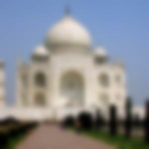
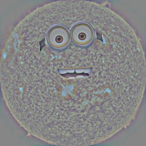
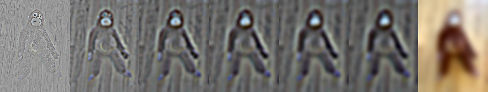

Original cameraman image

Partial derivative in x
Partial derivative in y
We compute the partial derivatives in x and in y of the cameraman image by convolving the cameraman image with the finite difference operators.
|
Original cameraman image |
Partial derivative in x |
Partial derivative in y |
We then compute the gradient magnitude by squaring the partial derivatives in x and in y, adding them together, and taking the square root.
|
Original cameraman image |
Gradient magnitude |
Binarized gradient magnitude (threshold = 0.3) |
We blur the cameraman image to smooth out noise by convolving with a 2D Gaussian filter. We then repeat the previous procedure, convolving with the finite difference operators to compute the partial derivatives
|
Original cameraman image |
Blurred cameraman image |

Partial derivative in x |
Partial derivative in y |
From the partial derivatives of the blurred images, we compute the gradient magnitude and a binarized version.
|
Original cameraman image |
Blurred cameraman image |

Gradient magnitude |

Binarized gradient magnitude (threshold = 0.03) |
The differences we see by blurring the cameraman are as follows. It appears that by blurring the cameraman, we pick up on a lot fewer edges -- these edges were likely a result of noise. Because the Gaussian filter acts as a lowpass filter and attenuates high-frequency noise, blurring the image using a Gaussian convolution can reduce the impact of fake edges created as a result of noise. As a result, we need a lower threshold when binarizing the gradient magnitude image in order to get a good image that represents most of the real edges.
We convolve the Gaussian with the finite difference operators to create Derivative of Gaussian filters for both the x and y directions.
|
Derivative of Gaussian (x direction) |
Derivative of Gaussian (y direction) |
We then apply the DoG filters to compute partial derivatives in x and in y. We compute the gradient magnitude image and binarize. The second row of the below images shows the results from when we first blurred the image and then took the partial derivatives. We can see that the results are the same, which makes sense given the associative nature of convolution.
|
Partial derivative in x using DoG |

Partial derivative in y using DoG |
Gradient magnitude using DoG |
Binarized gradient magnitude (threshold = 0.03) using DoG |
|
Partial derivative in x without using DoG |
Partial derivative in y without using DoG |
Gradient magnitude without using DoG |
Binarized gradient magnitude (threshold = 0.03) without using DoG |
We first demonstrate the process of sharpening on the picture of the Taj Mahal. We blur the Taj Mahal by applying a Gaussian filter to get the low frequencies present in the image, and then subtract this from the original image of the Taj Mahal to get the high frequencies in the image. We add back these high frequencies (using an alpha = 1) to the original Taj Mahal image to get a sharpened version. Alpha is a parameter that corresponds to how much of the high frequencies to add back in -- the higher the alpha, the more high frequencies are added back, and the more the image is sharpened. For all of the following images except the originals, we apply `np.clip` to keep the pixel values between 0 and 1. For all of the following, we use Gaussians of sigma = 5.

Original Taj |

Blurring the Taj with the Gaussian (getting low frequencies of the image) |
Subtracting blurred Taj from original (getting high frequencies of the image) |
Adding high frequencies back in (with the alpha multiple of 1) to the original Taj |
Now, we also define a single unsharp mask filter as (1 + alpha) * unit_impulse - alpha * gaussian that sharpens an image. Higher alphas correspond to more sharpening. We show the results for various alpha values.
|
Taj sharpened with alpha = 1 |
Taj sharpened with alpha = 5 |
Taj sharpened with alpha = 10 |

Taj sharpened with alpha = 20 |
We now repeat the previous process with an image of Taylor Swift (my favorite artist!). First, we demonstrate sharpening by blurring to get the low frequencies, subtracting to get the high frequencies, and adding back to get a sharper image. For all of the following, we use Gaussians of sigma = 5. For all of the following images except the originals, we apply `np.clip` to keep the pixel values between 0 and 1.

Original Taylor Swift |
Blurring Taylor Swift with the Gaussian (getting low frequencies of the image) |
Subtracting blurred Taylor Swift from original (getting high frequencies of the image) |
Adding high frequencies back in (with the alpha multiple of 1) to the original Taylor Swift |
By defining a single unsharp mask filter, we can quickly look at different values for alpha when sharpening the image of Taylor Swift.
|
Taylor Swift sharpened with alpha = 1 |
Taylor Swift sharpened with alpha = 5 |
Taylor Swift sharpened with alpha = 10 |
Taylor Swift sharpened with alpha = 20 |
We now look at taking a sharp image, blurring it, and trying to sharpen it again. We first try directly sharpening the blurred image with the unsharp mask filter. For all of the following images except the originals, we apply `np.clip` to keep the pixel values between 0 and 1. For all of the following, we use Gaussians of sigma = 5.
|
Original baby monkey |
Sharpened baby monkey (alpha = 1) |
Sharpened-then-blurred baby monkey |
Sharpened-then-blurred-then-sharpened baby monkey (alpha = 1) |
We see that sharpening the blurred image does not do a good job of recovering the originally sharpened image nor the original image. This is because when we apply a Gaussian blur (which acts as a lowpass filter), we lose much of the information at the higher frequencies and can no longer recover it since the higher frequencies are attenuated. Even when we try to resharpen the image, much of the information about those higher frequencies has been lost, so resharpening does not do a good job. We can try an alternative strategy where instead of directly sharpening the blurred image, we add back in the high frequencies of the original image.
|
High frequencies of the original baby monkey (computed by subtracting blurred baby monkey from original) |
Sharpened-then-blurred baby monkey |
High frequencies added back to sharpened-then-blurred baby monkey (alpha = 1) |
High frequencies added back to sharpened-then-blurred baby monkey (alpha = 2) |
We see that by directly adding in the high frequencies, we do a far better job of recovering the original and/or originally sharp monkey baby image. This way, we do not lose the information about the higher frequencies of the image as was happening previously.
Hybrid images were created by combining the low frequency components of one image with the high frequency components of another image. Low and high frequency components were computed using lowpass (Gaussian) filters and highpass (unit impulse - Gaussian) filters. Hybrid images work because while from close up, we tend to perceive the high frequency components of an image, from far away, we tend to perceive the low frequency components. Because the low and high frequency components of the hybrid image are from two separate images, this makes the image look like two separate images from different distances.
|
Happy Cillian Murphy (aligned version) |
Sad Cillian Murphy (aligned version) |
Lowpass filter applied to Happy Cillian Murphy (sigma = 6) |
Highpass filter applied to Sad Cillian Murphy (sigma = 10) |

Hybrid image from the filtered images added together |

FFT plot of Happy Cillian Murphy (aligned version) |

FFT plot of Sad Cillian Murphy (aligned version) |

FFT plot of Lowpass filter applied to Happy Cillian Murphy (sigma = 6) |

FFT plot of Highpass filter applied to Sad Cillian Murphy (sigma = 10) |

FFT plot of Hybrid image from the filtered images added together |
|
Eagle (aligned version) |
Monkey (aligned version) |
Lowpass filter applied to eagle (sigma = 3) |
Highpass filter applied to monkey (sigma = 2) |

Hybrid image from the filtered images added together |
|
Happy dog (aligned version) |
Sad dog (aligned version) |
Lowpass filter applied to happy dog (sigma = 3) |
Highpass filter applied to sad dog (sigma = 10) |
Hybrid image from the filtered images added together |
The happy and sad dog hybrid image appears to have not worked well. One possible reason for this is because the two images did not align well. Because the dog opens its mouth when happy, this results in a significantly different location of many facial features between the happy and sad dog -- including its nose and particularly, its mouth. This results in the hybrid image appearing unnatural.
We experiment with using color to enhance the effect. We try four different combinations -- color for neither, color for just high frequency, color for just low frequency, and color for both.
| Color for neither | Color for high frequency | Color for low frequency | Color for both high and low frequencies |
We compute the Gaussian and Laplacian stacks for the apple and the orange. We compute Gaussian stacks by repeatedly applying the Gaussian filter to the images. We compute Laplacian stacks by subtracting consecutive levels of the Gaussian stack, with the last element of the Laplacian stack simply being the last element of the Gaussian stack. We compute stacks of depth 7 using Gaussian filters of sigma = 5.
| Apple Gaussian Stack |  |
| Apple Laplacian Stack | |
| Orange Gaussian Stack | |
| Orange Laplacian Stack |
We now create a Gaussian stack for the mask. The mask for the oraple is simply all white on the left half and all black on the right half. Again, we use depth of 7 and sigma of 5.
| Mask Gaussian Stack |
We apply these masks to the apple and orange Laplacian stacks, and we add together the results to create a Laplacian stack for the oraple. We collapse the Laplacian stack for the oraple by summing the levels up to create the oraple.
| Masked Apple Laplacian Stack | |
| Masked Orange Laplacian Stack | |
| Oraple Laplacian Stack | |
| Oraple |
| Apple | Orange | Oraple | |
| Higher frequencies (level = 0) | |||
| Middle frequencies (level = 2) | |||
| Lower frequencies (level = 4) | |||
| Combined from Laplacian stack |
We used an irregular mask to blend a minion's face with the Sun. We compute the Gaussian and Laplacian stacks for the minion and the Sun. We compute stacks of depth 7 using Gaussian filters of sigma = 5.
| Minion Gaussian Stack | |
| Minion Laplacian Stack |  |
| Sun Gaussian Stack | |
| Sun Laplacian Stack |
We now create a Gaussian stack for the mask. The mask for the Sunion is all white around the minion's eyes and mouth. Again, we use depth of 7 and sigma of 5.
| Mask Gaussian Stack |
We apply the mask Gaussian stack to the minion and Sun Laplacian stacks, and we add together the results to create a Laplacian stack for the Sunion. We collapse the Laplacian stack for the Sunion by summing the levels up to create the Sunion.
| Masked Minion Laplacian Stack | |
| Masked Sun Laplacian Stack | |
| Sunion Laplacian Stack | |
| Sunion (we use `np.clip` for this) |
| Minion | Sun | Sunion | |
| Higher frequencies (level = 0) |  | ||
| Middle frequencies (level = 2) | |||
| Lower frequencies (level = 4) |

|
||
| Combined from Laplacian stack |
We used an irregular mask to blend a banana into the monkey's stomach. We compute the Gaussian and Laplacian stacks for the banana and the monkey. We compute stacks of depth 7 using Gaussian filters of sigma = 5.
| Banana Gaussian Stack | |
| Banana Laplacian Stack | |
| Monkey Gaussian Stack | |
| Monkey Laplacian Stack |
We now create a Gaussian stack for the mask. The mask for the Monana is all white around the banana's region in order to isolate the banana from its background. Again, we use depth of 7 and sigma of 5.
| Mask Gaussian Stack |
We apply the mask Gaussian stack to the banana and monkey Laplacian stacks, and we add together the results to create a Laplacian stack for the Monana. We collapse the Laplacian stack for the Monana by summing the levels up to create the Monana.
| Masked Banana Laplacian Stack | |
| Masked Monkey Laplacian Stack | |
| Monana Laplacian Stack |  |
| Monana (we use `np.clip` for this) |
| Banana | Monkey | Monana | |
| Higher frequencies (level = 0) | |||
| Middle frequencies (level = 2) | |||
| Lower frequencies (level = 4) | |||
| Combined from Laplacian stack |
The kernel sizes were chosen to be around 6 * the value of the sigma.
For all output images (meaning images excluding original images), we linearly rescale so that the darkest pixel has value 0 and lightest pixel has value 1, unless otherwise noted. A number of images use `np.clip` instead, particularly with the image sharpening section, because `np.clip` tended to provide better results.
The most important thing I learned from the project is how spatial frequencies affect our perception of an image, and how this really means that perception is all relative. I can see that with the hybrid images for example, where we can create two interpretations of the same image by mixing different frequencies of two images. I can see it also with multiresolution blending, where we take advantage of blending at different frequencies to more seamlessly blend together two images and convince the viewer that it is a single image.